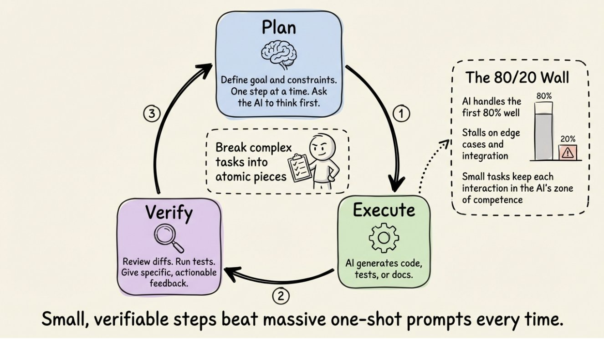
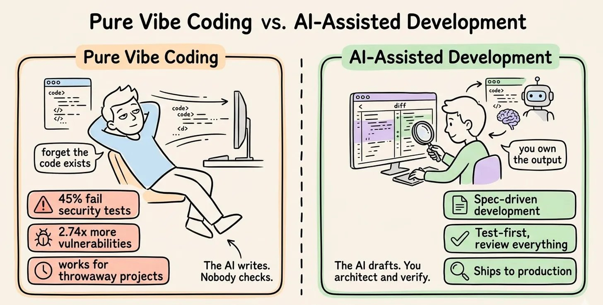

The practice of using LLM-powered coding agents to accelerate software implementation while maintaining engineering ownership. AI amplifies your judgment — it does not replace it.
A randomized controlled trial found that experienced developers were 19% slower with AI coding tools — yet believed they were 20% faster. That is a ~40-point perception gap. The tools are not the problem; the practices around them are.
The biggest risk of AI coding tools is not bad code — it is false confidence.
| Mode | Description | When to Use |
|---|---|---|
| Pure vibe coding | The AI writes. Nobody checks. | Throwaway prototypes, weekend experiments |
| AI-assisted development | The AI drafts. You architect and verify. Spec-driven, test-first. | Production code |
In traditional development, the time split is roughly 70% translating ideas into syntax and 30% thinking. AI-assisted development flips this entirely.
| Traditional | AI-Assisted |
|---|---|
| 70% syntax and implementation (you are the typist) | 30% syntax and implementation |
| 30% thinking and verification | 70% thinking, verification, reviewing AI output |
Your role does not shrink. It changes. AI does not reduce your cognitive load — it redirects it toward the work that matters most. You become the architect, not the typist.
The single biggest mistake is prompting too early. A 15-line spec outperforms an open-ended prompt every time.
| Pillar | Contents |
|---|---|
| Intent | What are we building? Why does it matter? |
| Constraints | Tech stack choices, architectural patterns, what NOT to do |
| Acceptance Criteria | Testable conditions, edge cases, definition of done |
The quality of information available to the AI matters more than how cleverly you phrase your request. Context engineering is designing what information is available to the AI at any moment.
| Prompt Engineering | Context Engineering |
|---|---|
| "Let me rephrase this more cleverly..." | Fresh sessions per task |
| Focuses on how you ask | Load context just in time |
| Diminishing returns | Only what AI can't infer |
| Controls what you say | Controls what the AI sees |
The cycle runs continuously: Plan → Execute → Verify → back to Plan.
Between iterations: break complex tasks into atomic pieces. Small, verifiable steps beat massive one-shot prompts every time.
Without tests, AI output is unverifiable. The agent may claim something works without running it. Any new change can silently break an unrelated feature.
Test-first development with agents:
40% of AI code completion suggestions were insecure in security-sensitive scenarios. One platform's missing row-level security exposed 170+ production apps.
Supply chain attack via hallucinated packages — three-stage flow:
Three defenses:

The short @thdxr clipping captures a useful senior-engineering habit: the direct task is often a symptom of a more useful abstraction.
This connects to Codex Workflows and goal mode: long-running agents do better when the target is the real outcome and progress signals reveal whether the current subproblem is still the right one.
| Anti-pattern | What Happens | Fix |
|---|---|---|
| Endless error loop | AI "fixes" a bug by introducing another | Stop. Read the code. Diagnose root cause. Give precise problem description. |
| Comprehension gap | Shipping code you don't understand | If you can't explain it, don't merge it. |
| Session drift | Long sessions accumulate stale context; AI loses coherence | Start fresh; carry spec + decisions, not conversation history. |
The trust gradient runs from maximum safety to maximum speed. Match the trust level to the task — start safe, dial up as confidence grows.
| Mode | Behavior | When to Use |
|---|---|---|
| Plan | Read-only; cannot write or execute; explores and thinks first | Safest. Scout the codebase before committing to any changes. |
| Default | Preview every change; approve each action; full control | Recommended starting point for most tasks. |
| Accept Edits | File edits auto-approved; shell commands still ask | Confident code changes and trusted refactoring. |
| Auto Approve | Everything runs; no confirmations | Formatting, docs, linters only. Low-risk, well-defined tasks. |
